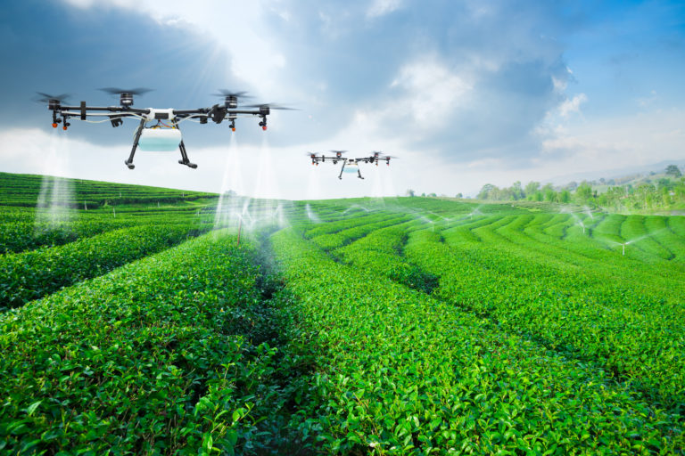

Sustainable development
CROP ROTATION
• Crop rotation is the practice of growing a series of dissimilar or different types of crops in the same area in sequenced seasons
Benefits:
1. Crop rotation maintains soil fertility. and also improve it. 2. Crop rotation prevents soil from weeds, pests, and disease 3. Control soil erosion and soil depletion. 4. The physical and chemical nature of the soil remains unaltered. 5. Crops are grown in one period of time and utilize one set of nutrients. 6. Different crops are grown in the following time period the other set of nutrients so that this time will be enough for the first set of nutrients to replenish themselves.
Benefits:
1. Crop rotation maintains soil fertility. and also improve it. 2. Crop rotation prevents soil from weeds, pests, and disease 3. Control soil erosion and soil depletion. 4. The physical and chemical nature of the soil remains unaltered. 5. Crops are grown in one period of time and utilize one set of nutrients. 6. Different crops are grown in the following time period the other set of nutrients so that this time will be enough for the first set of nutrients to replenish themselves.
AGROFORESTRY
Agroforestry is a type of land management where trees or shrubs are planted around or amid crops or pastureland.
Benefits
1. have more biodiversity over conventional farming systems. two or more interdependent plant species provide a more complex environment that may sustain a greater range of animals 2. Groundcover vegetation, like naturally occurring grasses in agroforestry systems, can buffer depleted soil from erosion 3. Agroforestry can also help clean the water by reducing fertiliser and soil surface overflow 4. Agroforestry practises can help achieve a variety of environmental objectives: a. Lowering odour, dust and noise. b. Visual aesthetics and green space c. Wildlife habitat improvement or preservation 5. Agroforestry can help mitigate climate change while also providing adaptive advantages
Benefits
1. have more biodiversity over conventional farming systems. two or more interdependent plant species provide a more complex environment that may sustain a greater range of animals 2. Groundcover vegetation, like naturally occurring grasses in agroforestry systems, can buffer depleted soil from erosion 3. Agroforestry can also help clean the water by reducing fertiliser and soil surface overflow 4. Agroforestry practises can help achieve a variety of environmental objectives: a. Lowering odour, dust and noise. b. Visual aesthetics and green space c. Wildlife habitat improvement or preservation 5. Agroforestry can help mitigate climate change while also providing adaptive advantages
CONTOUR FARMING
contour farming, the practice of tilling sloped land along lines of consistent elevation in order to conserve rainwater and to reduce soil losses from surface erosion
Benefits:
a. prevents soil erosion b. Offers more even water distribution for irrigation c. Conserves water d. Lowers energy expenses e. higher yields, and higher-quality crops
Benefits:
a. prevents soil erosion b. Offers more even water distribution for irrigation c. Conserves water d. Lowers energy expenses e. higher yields, and higher-quality crops
FLOATING FARMING
• Hydroponics or hydroponic farming is the technique of cultivating plants in a nutrient medium solution of water without the presence of soil
Benefits:
a. The risk of pathogen contamination is low in hydroponic farming as compared to soil cultures b. It saves labour because it uses automatic irrigation and fertilising systems. c. It can even be set up indoors in small places which helps to bring greenery in densely populated areas. d. It is also being researched for implementation on spacecraft.
Benefits:
a. The risk of pathogen contamination is low in hydroponic farming as compared to soil cultures b. It saves labour because it uses automatic irrigation and fertilising systems. c. It can even be set up indoors in small places which helps to bring greenery in densely populated areas. d. It is also being researched for implementation on spacecraft.

ORGANIC FARMING
Agricultural process that uses biological fertilisers and pest control acquired from animal or plant waste.
System of farming that uses organic inputs like green manures, cow dung, etc., for cultivation.
Advantages:
Economical Good return on Investment High demand Nutritional Environment-friendly
Advantages:
Economical Good return on Investment High demand Nutritional Environment-friendly

PRECISION FARMING
Precision agriculture uses information technology (IT) to ensure that crops and soil receive exactly what they need for optimum health and productivity.
Benefits:
a. predictive analytics software uses the collected data to provide farmers with guidance about crop rotation, optimal planting times, harvesting times and soil management b. Helps farmers determine the optimum amount of water, fertilizers , pesticides to apply c. Prevents farmers from wasting resources
Benefits:
a. predictive analytics software uses the collected data to provide farmers with guidance about crop rotation, optimal planting times, harvesting times and soil management b. Helps farmers determine the optimum amount of water, fertilizers , pesticides to apply c. Prevents farmers from wasting resources
RAINWATER HARVESTING
• Rainwater harvesting is the simple process or technology used to conserve rainwater by collecting, storing, conveying and purifying of rainwater that runs off from rooftops, parks, roads, open grounds, etc. for later use
Benefits:
• Less cost. • Helps in reducing the water bill. • Decreases the demand for water. • Reduces the need for imported water. • Promotes both water and energy conservation. • Improves the quality and quantity of groundwater. • Does not require a filtration system for landscape irrigation. • This technology is relatively simple, easy to install and operate. • It reduces soil erosion, stormwater runoff, flooding, and pollution of surface water with fertilizers, pesticides, metals and other sediments. • It is an excellent source of water for landscape irrigation with no chemicals, dissolved salts and free from all minerals.
Benefits:
• Less cost. • Helps in reducing the water bill. • Decreases the demand for water. • Reduces the need for imported water. • Promotes both water and energy conservation. • Improves the quality and quantity of groundwater. • Does not require a filtration system for landscape irrigation. • This technology is relatively simple, easy to install and operate. • It reduces soil erosion, stormwater runoff, flooding, and pollution of surface water with fertilizers, pesticides, metals and other sediments. • It is an excellent source of water for landscape irrigation with no chemicals, dissolved salts and free from all minerals.
VERMICOMPOSTING
Vermicomposting is the scientific method of making compost, by using earthworms. They are commonly found living in soil, feeding on biomass and excreting it in a digested form
Benefits:
1. It is a time-consuming process and takes as long as six months to convert the organic matter into usable forms. 2. It releases a very foul odour. 3. Vermicomposting is high maintenance. The feed has to be added periodically and care should be taken that the worms are not flooded with too much to eat. 4. The bin should not be too dry or too wet. The moisture levels need to be monitored periodically. 5. They nurture the growth of pests and pathogens such as fruit flies, centipede and flies.
Benefits:
1. It is a time-consuming process and takes as long as six months to convert the organic matter into usable forms. 2. It releases a very foul odour. 3. Vermicomposting is high maintenance. The feed has to be added periodically and care should be taken that the worms are not flooded with too much to eat. 4. The bin should not be too dry or too wet. The moisture levels need to be monitored periodically. 5. They nurture the growth of pests and pathogens such as fruit flies, centipede and flies.